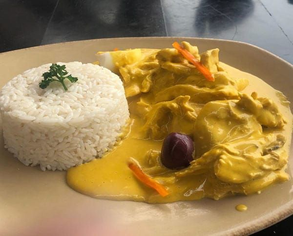

Receta de Ají de Gallina
Ingredientes:
- 1 pechuga de pollo
- 4 panes franceses
- ½ cebolla chica
- 3 tazas de agua
- ½ taza de leche evaporada
- 3 cucharadas de queso parmesano
- 2 cucharadas de ají mirasol molido
- 1 cucharada de ají amarillo molido
- ½ cucharada de ají panca molido
- 2 cucharaditas de ajos
- ¼ cucharadita de palillo
- ¼ cucharadita de pimienta
- Una pizca de orégano
Instrucciones:
- Sancochar el pollo en 2 tazas de agua, enfriar y deshilachar. Reservar el caldo.
- En una olla, hacer el aderezo con cebolla, ají amarillo molido, ají mirasol, ají panca, orégano, palillo, pimienta y sal al gusto.
- Remojar el pan en el caldo de pollo y licuar.
- Agregar la mezcla al aderezo y cocinar por 10 minutos moviendo constantemente.
- Agregar el pollo deshilachado y 1 taza de agua. Mezclar y cocinar por 5 minutos.
- Agregar la leche y, al retirar del fuego, agregar el queso parmesano.
- Servir caliente en un plato.
- Puede acompañar el plato con huevo, papa sancochada y aceitunas.
- ¡Disfruta!